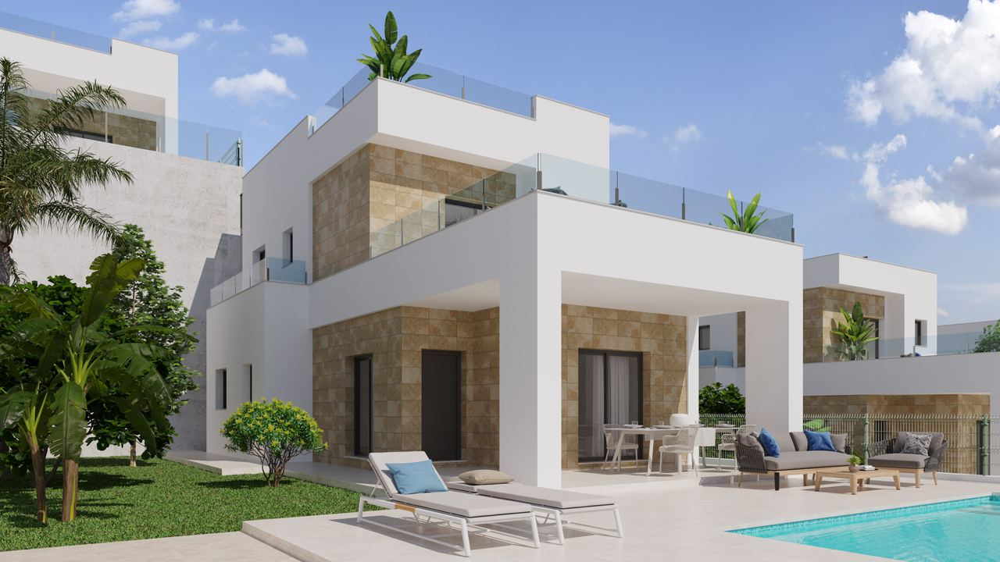
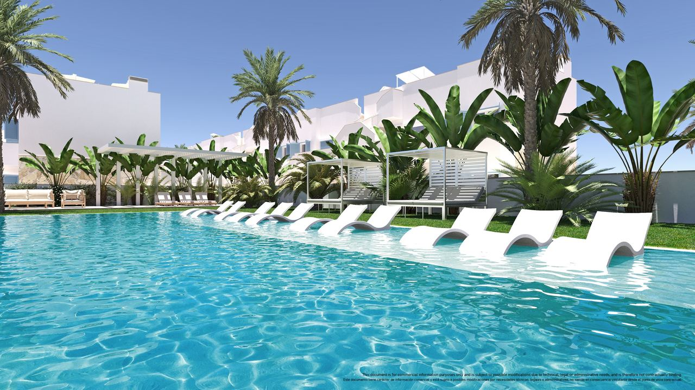
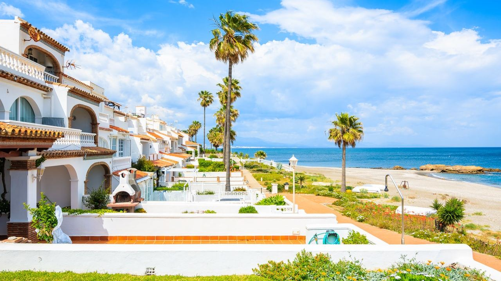
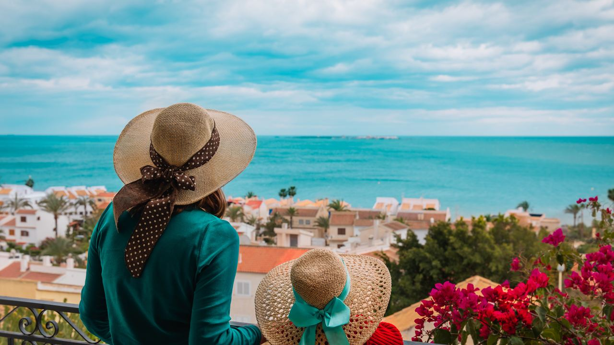

Buying in Spain · Guide
Buying a Luxury House or Villa in Spain – Where to Look and What to Know
 By Aleksandra Kobus · · updated · 4 min read
By Aleksandra Kobus · · updated · 4 min read

In short: The Costa Blanca and the Costa del Sol are the two best places to look for a luxury home in Spain. Prices rose 12.2% in the year to mid-2026, and good villas sell fast. Plan for buying costs of about 10–13% on top of the price, check the rental licence if you want to let the home, and remember that buying no longer gives you a golden visa.
A villa in Spain can be a family home, a place to retire or an investment that rents for most of the year. Here is what makes a home truly luxury, where to look, what it costs and what to check before you buy.
What makes a home luxury?

Luxury is more than size. The homes our clients love have a few things in common: a great location, open views of the sea or the mountains, a private pool, generous terraces and a high standard of finish.
Villas
A luxury villa usually stands on its own plot, often in a quiet residential area or a gated community near a golf course. Expect a modern design, large windows, a private pool, parking and space for outdoor living.
Apartments and penthouses
The best apartments win on location: in prestigious resorts, close to the beach or with direct beach access. New developments often add lifts, underground parking, shared pools, a gym and a spa. A penthouse with a large roof terrace gives you villa-style living with less upkeep.
Where to look

Spain has many beautiful areas, but two coasts stand out for luxury homes:
- Costa Blanca, the coast of Alicante province in eastern Spain, with more than 200 km of beaches and coves. The north (Altea, Jávea, Moraira, Benissa, Calpe) has hills, sea views and many high-end villas. The south (Torrevieja, Orihuela Costa) has more new builds at lower prices. Alicante airport is close to both.
- Costa del Sol, the coast of Málaga province in Andalusia. Marbella, Benahavís and Estepona are the heart of the luxury market, with golf courses, marinas and some of Spain's most exclusive gated estates. Málaga airport has flights to most of Europe.
Both coasts suit holiday homes, retirement and rentals.
What does a luxury home cost?
Prices depend heavily on the area and the view. As a rough guide:
- New villas with a private pool on the southern Costa Blanca start at about €450,000.
- Villas with sea views in Altea, Jávea, Moraira or on the Costa del Sol often cost well over €1 million, and the top homes in Marbella and Benahavís reach several million.
- Luxury apartments and penthouses in good coastal locations usually start from around €300,000.
Prices are still rising fast. According to Spain's statistics office (INE), house prices rose 12.2% in the year to the second quarter of 2026, with resale homes up 12.9% and new builds up 7.4%.
Buying costs and rules
Plan for these costs on top of the price:
- New build: 10% VAT (IVA) plus stamp duty (AJD) of 1.4% in the Valencian Community or 1.2% in Andalusia.
- Resale: transfer tax (ITP) of 9% in the Valencian Community (11% above €1 million) or 7% in Andalusia.
- Notary, land registry, lawyer: usually 1.5–2.5% together.
Two rules have changed recently:
- No more golden visa. Since 3 April 2025, buying property for €500,000 or more no longer gives non-EU buyers a residence permit.
- Holiday rentals. Since April 2025, a new holiday rental in an apartment building needs the approval of three-fifths of the owners, and every holiday rental needs a regional tourist registration number shown in its listings. Check the licence before you buy if you plan to rent.
Why buy a luxury home in Spain?

- Climate and lifestyle. Long summers, mild winters and the sea on your doorstep.
- Quality of life. In the 2024 InterNations Expat City Ranking, Valencia, Málaga and Alicante took the top three places in the world.
- A strong market. Demand from foreign buyers keeps prices rising in the best coastal areas.
- Rental income. On the coast the season lasts most of the year, so a well-placed villa with a licence can earn for many months.
What to check before you buy
- Get your NIE. This foreigner's tax number is required for every property purchase.
- Open a Spanish bank account to pay the deposit, taxes and bills.
- Arrange finance early. Spanish banks usually lend non-residents 60–70% of the price.
- Hire an independent lawyer to check the title, debts, building licences and, for an off-plan home, the bank guarantee for your payments.
- Work with an agent you trust who knows the area and speaks your language.
Frequently asked questions
Where is the best place to buy a luxury villa in Spain?
For most buyers, the northern Costa Blanca (Altea, Jávea, Moraira, Benissa) or the Costa del Sol (Marbella, Benahavís, Estepona). Both have sea views, golf, good schools and international airports nearby.
How much does a luxury villa cost in Spain?
New villas with a private pool start at about €450,000 on the southern Costa Blanca. Sea-view villas in the most sought-after areas often cost more than €1 million.
Can I get residency by buying a villa in Spain?
No. The golden visa for property buyers ended on 3 April 2025. EU citizens can live in Spain without a visa; others need another route, such as the non-lucrative or digital nomad visa.
How much are the buying costs?
About 10–13% of the price in total: 10% VAT plus stamp duty on a new build, or 7–11% transfer tax on a resale, plus around 1.5–2.5% for the notary, registry and lawyer.
Find your villa with us
A luxury home in Spain can be the best decision you make for your family, your retirement or your savings. We sell villas and apartments on the Costa Blanca, Costa del Sol and Costa Cálida, and we will help you from the first viewing to the notary. Tell us what you are looking for and we will send you a selection.
Sources: INE, Housing Price Index Q2 2026 · Ley Orgánica 1/2025 (BOE)